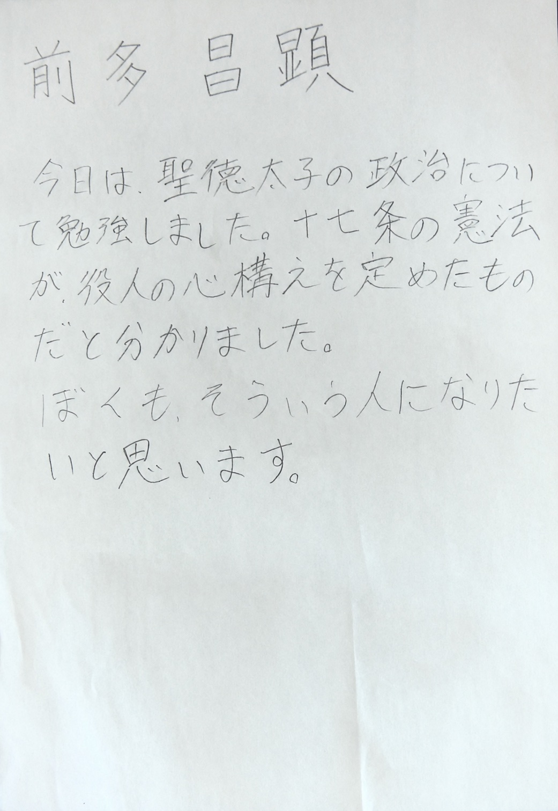

その1：鉛筆書き ダウンロード手順を動画で確認する
本文の手順どおりに進めば動きますが、画面を見ながらやりたい方はこちら。各動画は数分で見終わります。
 第3〜5章
NotebookLM×Geminiで、1単元の授業準備を一気に終わらせる
本書の中心ワークフロー。食材を入れてから、指導計画・ワークシート・ルーブリックまで。
第3〜5章
NotebookLM×Geminiで、1単元の授業準備を一気に終わらせる
本書の中心ワークフロー。食材を入れてから、指導計画・ワークシート・ルーブリックまで。
 第6章
AIにコードを書かせてGoogleフォーム作成を自動化する
ルーブリックが、1分で自己評価フォームになります。
第6章
AIにコードを書かせてGoogleフォーム作成を自動化する
ルーブリックが、1分で自己評価フォームになります。
 第7章
完全にGASだけで動く「スーパー記録くんネオ2」導入手順
話し合いの音声・写真・動画・画面録画を、先生のドライブに直接集めます。テンプレートのリンクは動画概要欄に。
第7章
完全にGASだけで動く「スーパー記録くんネオ2」導入手順
話し合いの音声・写真・動画・画面録画を、先生のドライブに直接集めます。テンプレートのリンクは動画概要欄に。
 第8章
手書きの振り返り画像を自動でスプレッドシートにデータ集計するフロー
フォルダーに入れるだけ。縦書きでも、丁寧じゃない字でも、なんとかなります。
第8章
手書きの振り返り画像を自動でスプレッドシートにデータ集計するフロー
フォルダーに入れるだけ。縦書きでも、丁寧じゃない字でも、なんとかなります。
演習用の架空自治体資料
第4章の演習で使う資料です。好きな市を選んで、教育方針と学校経営方針の2枚をNotebookLMに入れてから、自分の単元の指導案を頼んでみてください。
ここにある自治体・学校・人物は、すべて研修用の架空の設定です。実在のものとは一切関係ありません。各ページの「本文をコピー」ボタンで、そのままNotebookLMに貼りつけられます。
Studioワーク用のサンプル画像
第8章のワークで使う、手書き振り返りのサンプルです。画像を開いて保存し、Studioの監視フォルダーに入れると、スプレッドシートへの自動集計を試せます。鉛筆書き・筆文字・縦書きの3パターンを用意しました。

{kind=link}
{kind=link}
保存のしかた
・パソコン：各画像の下の「ダウンロード」を押すと、そのまま保存されます（保存先は通常「ダウンロード」フォルダー）。うまくいかないときは、画像をクリックして開き、右クリック→「名前を付けて画像を保存」でもOKです。
・iPad・スマホ：画像を長押しして「"写真"に追加」または「画像をダウンロード」を選びます。
保存できたら、その画像をStudioの監視フォルダー（Googleドライブ）にアップロードすれば準備完了です。
・パソコン：各画像の下の「ダウンロード」を押すと、そのまま保存されます（保存先は通常「ダウンロード」フォルダー）。うまくいかないときは、画像をクリックして開き、右クリック→「名前を付けて画像を保存」でもOKです。
・iPad・スマホ：画像を長押しして「"写真"に追加」または「画像をダウンロード」を選びます。
保存できたら、その画像をStudioの監視フォルダー（Googleドライブ）にアップロードすれば準備完了です。
名前はいずれも架空またはデモ用です。その3は筋肉市の児童という設定なので、集計結果もあわせてお楽しみください。
本文で使うツール
- NotebookLM（Gemini Notebook） — 食材を入れる台所（第3章）
- Gemini — 練り上げの相棒（第5章）
- script.new — GASの新規作成（第6章）
- sheet.new — スプレッドシートの新規作成（第8章）
- Google Workspace Studio — 手書きを受け取る自動化（第8章）